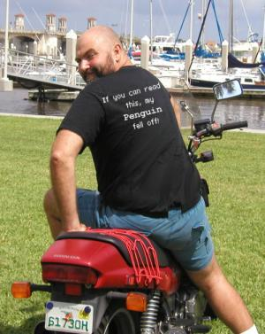

The Backpage
By Ben Okopnik
"World domination. Fast." "...and scantily clad females, of course. Who cares if it's below zero outside." -- Linus Torvalds
Linux - according to LG's motto, certainly - is fun. Let's face it; you're sweating over that antique piece of hardware and cursing it and its entire ancestry to smithereens (no, you can't get Cray-class performance from your 386SX. Not even with Linux.) because it's what you actually enjoy doing - at some level, anyway. Work motivated by fun is, in fact, the most powerful kind of productive ethic; it causes programmers to stay up into the wee hours for days on end, pounding away on the keyboard in Deep Hack mode, and keeps you looking for solutions long after a "sensible" person would have given up (um... if you do manage that Cray trick, be sure to let me know.) Money alone is not and cannot be the motivator for that level of involvement.
Just as a random example, the amount of energy I personally have put
into tweaking Linux systems over the years could easily power, say, Los
Angeles for the next few centuries - even if everybody there switched to
Linux and left their machines on 24/7. Mind you, I didn't do this because
there was anything wrong; it was always due to some FAQ, HOWTO, or even an
article right here in LG written by another whirl-eyed Linux maniac: "Here,
just try a little of this - it can't hurt you, it's
Open Source!" Meanwhile, this little critter
perched on my sinister scapula (red suit, horns, etc. - if you're going to
anthropomorphize, you might as well do it right) would
whisper in my ear: "Come on... you know you want to... just one
little file in /etc, what could it possibly hurt?"
Riiight...
After days of fixing up the latest disaster I had wrought, I would
swear on large stacks of religious books and every holy symbol known to
man(1) and alien(1) that I would never,
ever, mess with my beautifully-running system again...
while the little guy with the pitchfork hummed a little ditty:
"A little learning is a dangerous thing; Drink deep, or taste not the Pyrrhean spring..." (Alexander Pope)
<sigh> My friends think I'm going bald because I'm getting older. Linux CDs should come with a printed warning; something about "dangerous to sanity, sleep habits, and hair retention".
Sure, there must be people somewhere out there that can just pop in a RedHat/SuSE/Mandrake/whatever CD, run the install, and walk away. I mean, theoretically it's possible. But... where's the fun? Where's the challenge? Where is the juice? Besides, even those people, nametag-wearing corporate drones that they must be, get caught by the Penguin Syndrome eventually: they'll wake up one day and find themselves sitting at a keyboard, a mile deep in "sendmail.cf", fingers cramped from hours of typing. It is then that they'll know the secret shame of Penguin passion, and find themselves guiltily hiding their scribbled notes on upgrading their Apache server...

These days, we do have trivially-easy setups for Linux - the single-user surf/email/word processor workstation that is all your Grandma wants is, again, just a single-CD boot away (Knoppix, Morphix, and many, many other variants exist.) However, if you want top performance out of one of these powerful Linux beasts, or if you want to make your computer do things that are considered impossible in other OSes, you have to learn a good bit of Quantum Wrenchology - as my motorcycling friends used to say, "if you don't wrench, you don't ride". This is effort that pays for itself, though, in multiple ways. (A word of warning, for those starting down this path: the mechanic's curse is The Ultimate Machine, the one that will do unprecedented things, run faster than a speeding bullet, and do it all on half a drop of fuel... as soon as he finishes putting it together. Meanwhile, he drives a barely-running 1919 GetOut'n'Push. Beware of getting caught in the loop.)
I don't know about the rest of you, but I personally get a real charge out of riding down Computer Highway, alternately chuckling at and pitying the poor Micro$oft users stranded by the roadside in their forlorn millions; cell phones glued to their ears, frantic expressions on their faces, calling their haughty unreachable mechanics who'll charge them vast amounts of money for work that will fail, again and again... while we continue rolling down the road in our rapidly-growing numbers, engines snarling with barely-restrained power.
See you all out there. Keep the rubber side down.

Ben was born in Moscow, Russia in 1962. He became interested in electricity
at the tender age of six, promptly demonstrated it by sticking a fork into
a socket and starting a fire, and has been falling down technological
mineshafts ever since. He has been working with computers since the Elder
Days, when they had to be built by soldering parts onto printed circuit
boards and programs had to fit into 4k of memory. He would gladly pay good
money to any psychologist who can cure him of the recurrent nightmares.
His subsequent experiences include creating software in nearly a dozen
languages, network and database maintenance during the approach of a
hurricane, and writing articles for publications ranging from sailing
magazines to technological journals. After a seven-year Atlantic/Caribbean
cruise under sail and passages up and down the East coast of the US, he is
currently anchored in St. Augustine, Florida. He works as a technical
instructor for Sun Microsystems and a private Open Source consultant/Web
developer. His current set of hobbies includes flying, yoga, martial arts,
motorcycles, writing, and Roman history; his Palm Pilot is crammed full of
alarms, many of which contain exclamation points.
He has been working with Linux since 1997, and credits it with his complete
loss of interest in waging nuclear warfare on parts of the Pacific Northwest.
 Ben is the Editor-in-Chief for Linux Gazette and a member of The Answer Gang.
Ben is the Editor-in-Chief for Linux Gazette and a member of The Answer Gang.